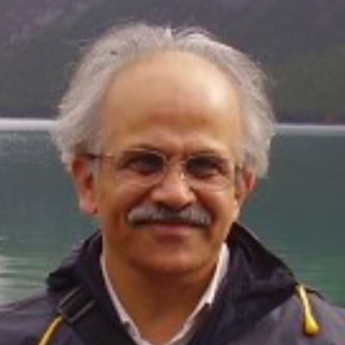

Australia member
Ajit Godbole
Name: Ajit Godbole Highest qualification and awarding university Ph D University of Wollongong, Australia Designation Senior Research Fellow Employer University of Wollongong, Australia Contact details: Email: WhatsApp number/Mobile number agodbole@uow.edu.au Landline (Office)…
Published 30 June 2022 · Updated 7 April 2025

| Name: | Ajit Godbole |
| Highest qualification and awarding university | Ph D
University of Wollongong, Australia |
| Designation | Senior Research Fellow |
| Employer | University of Wollongong, Australia |
Contact details:
|
agodbole@uow.edu.au |
| Landline (Office) : + 61 2 4221 4397 | |
| Home page link on your employer web site if available | |
| Key areas of interest | Science of flows (fluids, heat, etc) |
| Web links for your research profile on Google scholar; ORCID or ResearchGate (if available); only one of them please. |
Ajit Godbole is currently a Senior Research Fellow in the School of Mechanical, Mechatronics, Materials and Biomedical Engineering at the University of Wollongong, Australia. He was educated at IIT Bombay, India, University of Tennessee, Knoxville, USA, and University of Wollongong, Australia. He has more than 35 years’ experience in university-level teaching and research, besides a 4 year experience as research engineer (CFD) in France and India.
Ajit is interested in the science of flows, encompassing the fields of fluid dynamics, heat transfer and thermodynamics, among others.
Ajit has been one of the key researchers with the Energy Pipelines Cooperative Research Centre (EPCRC), and is currently engaged in research under the Future Fuels CRC (FFCRC) banner.
Research Project
- Proximity distance and ventilation requirements in gas distribution networks adapted to ‘future fuels’ (on-going )
- Atmospheric dispersion of CO2 following full-scale burst tests (2018)
Key Publications/Reports
- Ajit Godbole, Xiong Liu, Guillaume Michal, Bradley Davis, Cheng Lu, Keith Armstrong and Clara Huescar Medina (2018), Atmospheric dispersion of CO2 following full-scale burst tests, 14th Int Conf. on Greenhouse Gas Control Technologies (GHGT 14), 21-25 October, Melbourne, Australia
- Ajit Godbole, Guillaume Michal, Cheng Lu, Xiong Liu, Philip Venton and Noel Laidlaw (2014) Venting of a 32 km NG pipeline – field measurements and CFD simulations, Paper IPC2014-33287, Proc 2014 10th Int Pipeline Conference IPC2014, Sept 29-Oct 3, Calgary, Alberta, Canada
- Ajit Godbole, Guillaume Michal, Chang Lu, Philip Venton and Philip Colvin (2016), Thermal response of gas pipeline metal to gas decompression, Paper IPC2016-64333, Proc 2014 11th Int Pipeline Conference IPC2016, Sept 26-30, Calgary, Alberta, Canada
- Ajit Godbole (2016), Descriptivism and Science Education, Chapter 9 in Practitioners as Researchers, Case studies into innovative practice, Tins A Doe and Ken Sell eds, Primrose Hall Publishing Group, Sydney, Australia, London, UK
- Ajit Godbole, Guillaume Michal, Xiong Liu, Cheng Lu and Philip Venton (2015), Pipeline Blowdown: Field tests, CFD simulations and analysis, Paper 26, 20th Joint Technical Meeting on Pipeline Research, (20th JTM), Paris, France, 3-8 May